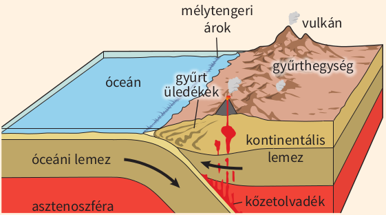

Az alábukó kőzetlemez előterében vulkánsor keletkezik, amely ki is emelkedhet a vízből. Ívelt alakja miatt szigetívnek nevezzük (pl. a Csendes-óceán nyugati részének szigetei: Új-Hebridák, Salamon-szigetek). A szigetívek anyaga nagyrészt az alábukó kőzetlemez olvadékából származik, ezért főként vulkáni kőzetek építik fel.
Óceáni és kontinentális lemez határán

gyűrt hegyvonulat keletkezése
A mélytengeri árkok mentén a sűrűbb és vékonyabb óceáni lemez pereme bukik a vastagabb, kisebb sűrűségű kontinentális lemez alá, majd több száz kilométer mélyen anyaga kis részben megolvad. A hegység vonulata a lemezek között feltolt és részben meggyűrt roppant mennyiségű üledékből keletkezik. A kőzetlemezek egymásnak feszülnek, az így támadt hasadékokon utat talál a felszínre a magma. Az alábukó lemeznek csak kis része olvad meg. A Csendes-óceánt övező hegységekben uralkodóak a magmás kőzetek. Amikor az óceáni lemez alábukik, a tengeri üledék egy része a mélytengeri árokba préselődik. Másik része redőkbe gyűrődik, és a kontinentális lemez peremére préselődik.
Két kontinentális lemez határán
Mivel az egymáshoz fokozatosan közeledő kontinentális lemezek közötti óceáni medence területe egyre csökken, a tengeri üledékek erősen meggyűrődnek. A különböző sebességgel mozgó lemezszegélyeken redők képződnek. Ütközéskor az anyaguk egymásra és a kontinentális lemez idősebb kőzeteire tolódik, ezért takaróredők, azokból pedig takarórendszerek keletkeznek. Így keletkeztek az Alpok, a Kárpátok és a Himalája hegységei, amelyek főként gyűrt kőzetrétegekből épülnek fel. Ha megvastagodik a kontinentális lemez, akkor a kis sűrűsége miatt felfelé mozog. Így a meggyűrt üledékek a felhajtóerő (izosztázia) miatt kiemelkednek.